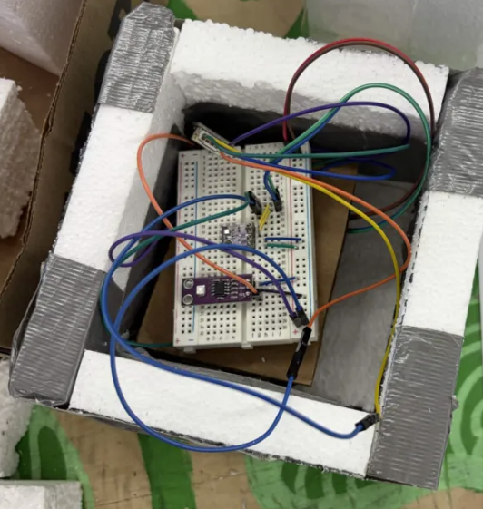
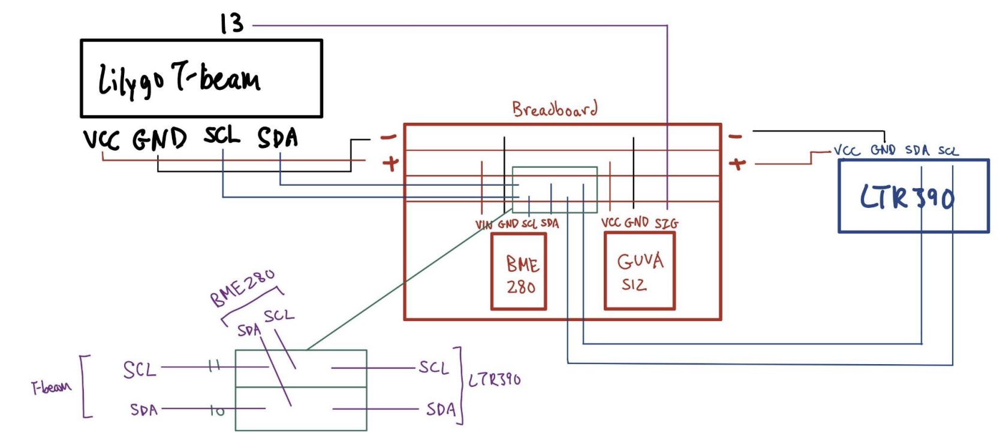
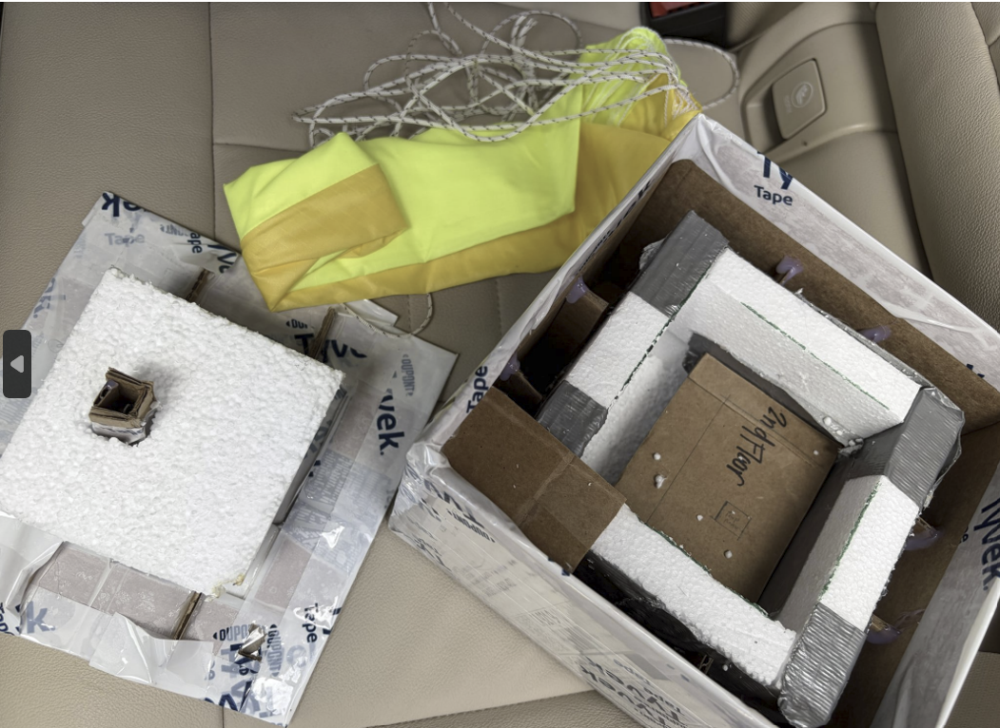
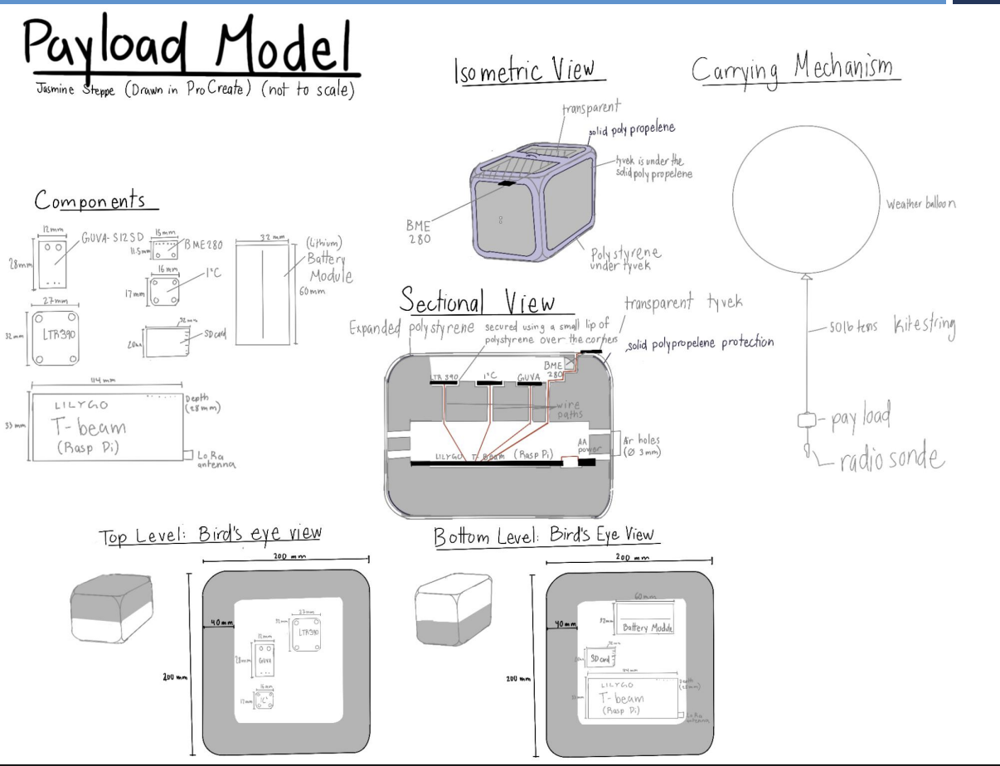
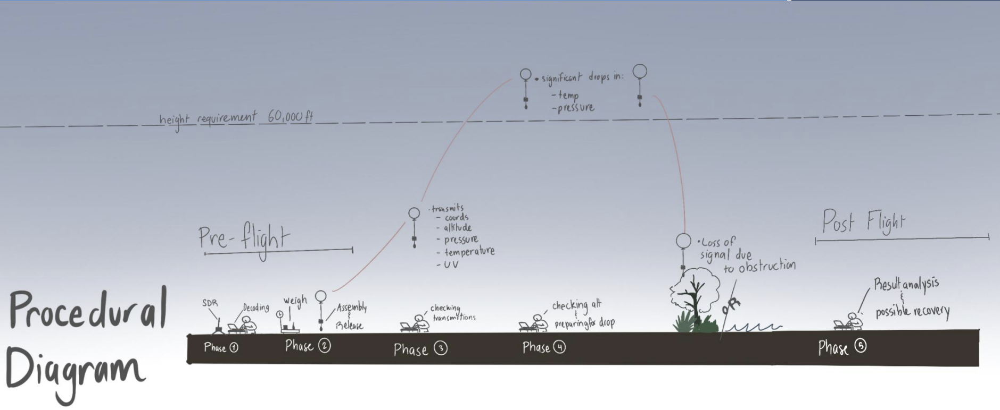
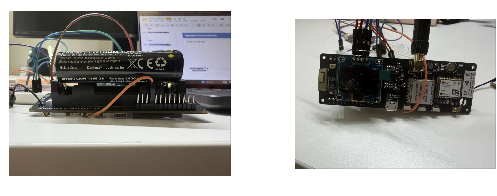

high-altitude systems
High-Altitude Balloon UV Payload
Northrop Grumman Foundation HIP · Project Lead · C++ · ESP32 · LoRa · 2025
Our team set out to answer one question: does UV radiation change as you climb through the layers of the atmosphere? As project lead on a $500 grant, I built the payload's electronics and firmware: an ESP32 flight computer reading three sensors over I2C and an ADC, and a 915 MHz LoRa link that sent a packet to our ground station every three seconds. The link carried live telemetry through a 90-minute ascent.

flight computer
LilyGO T-Beam (ESP32 + SX1276)
sensors
BME280, LTR390, GUVA-S12SD
radio
915 MHz LoRa · SF9 · 125 kHz · CR 4/7
telemetry
5-field CSV packet every 3 s
ground station
SX1262 receiver + 128×64 OLED
my role
Project lead; electronics + firmware
the question
Sunlight reaches us as three UV bands. UVC is absorbed high in the atmosphere and never reaches the ground. UVB is partly absorbed by stratospheric ozone. Most UVA passes straight through. So a payload climbing from the ground toward the stratosphere should see UV intensity change with altitude, and the shape of that change says something about where the absorption happens. That matters for public safety (UV exposure for high-altitude travel and outdoor work) and for climate science (tracking the ozone layer).
The program was run by the Northrop Grumman Foundation with the University of Alabama in Huntsville. Our payload had to reach at least 60,000 ft, stay up for at least 1.5 hours, send data back over LoRa, and comply with FAA regulations for unmanned free balloons (14 CFR Part 101).
requirements and environment
| condition | what it means for the design |
|---|---|
| Cold at altitude | Insulated battery compartment; sensors rated for high altitude |
| Low pressure | Vented enclosure (3 mm air holes) so the box doesn't pressurize and the BME280 reads outside air |
| UV exposure | UV-resistant outer materials, with a clear window over the UV sensors |
| Wind | Strong tether, balanced payload, every component secured |
| Thin air (~0.1 kg/m³) | Compact shape to limit drag (low priority) |
| Recovery | Parachute module for descent; separate radiosonde for tracking |
hardware
The flight computer is a LilyGO T-Beam: an ESP32 with an SX1276 LoRa radio, an AXP192 power-management chip and an 18650 lithium cell on board. Three sensors hang off it:
- BME280 for temperature, humidity and pressure. Pressure is how we know altitude: it falls predictably as the payload climbs.
- LTR390, a digital UV sensor run in its UV mode (gain 3×, 16-bit resolution) for the UVA reading.
- GUVA-S12SD, an analog UV photodiode with a broader UV response, read on the ESP32's 12-bit ADC. Two UV sensors with different responses gave us a cross-check on each other.
The BME280 and LTR390 share a single I2C bus (SDA 21, SCL 22) with the AXP192, and the GUVA's output goes to GPIO 13. In firmware I switch on each of the AXP192's power rails (LDO2, LDO3, DCDC1, DCDC2, EXTEN) before touching the sensors, because on the T-Beam nothing downstream has power until the PMIC says so.

The enclosure is expanded polystyrene wrapped in Tyvek, with a clear polypropylene top so the UV sensors see the sky. It has two levels: the sensors sit on top under the window, and the T-Beam and battery sit below in the insulated section. The payload hangs from the balloon on 50 lb kite line, with a radiosonde below it for tracking.


firmware
I wrote three Arduino/C++ sketches and brought the system up one layer at a time, so that when something broke I knew which layer it was in:
- test1: sensors only. Power up the PMIC, find each sensor, print every reading over serial every 2 s. No radio yet.
- sensorradio: the flight code. Reads all sensors, builds a comma-separated packet, transmits it over LoRa, waits 3 s, repeats.
- lorading: the ground station. Listens for packets, parses the five fields, and prints them to serial and a 128×64 OLED.
Each packet is five fields at fixed precision:
// temp(°C), humidity(%), pressure(hPa), UV index, GUVA voltage(V)
24.5,48.4,994.8,0.00,0.000Both radios use RadioLib at 915 MHz with spreading factor 9, 125 kHz bandwidth and coding rate 4/7. Those settings trade speed for range: each step up in spreading factor roughly doubles the time on air in exchange for better sensitivity, and the extra coding-rate redundancy lets the receiver correct more bit errors at long distance. At SF9 a packet this size spends about a quarter of a second on air, well inside the 3-second cycle.
Setup is fail-loud: if a sensor or the radio doesn't respond at power-up, the code prints what failed and halts instead of flying with a silent gap in the data. The BME280 check tries both of its possible I2C addresses (0x76, then 0x77), so the same code works across breakout boards.
testing: proof of concept
Before flight we tested the full chain on the bench. The first two tests check the sensors: each reading should move the right way when we change the conditions around it. The third test checks the radio: packets sent by the flight computer arriving and decoding at the ground station in real time.
flight
We planned the flight in five phases: set up the ground station and decoding; weigh, assemble and release; watch transmissions during the climb; track altitude and prepare for the drop; then recover and analyze. We expected sharp drops in temperature and pressure as the payload passed 60,000 ft, and planned for losing signal near the ground when terrain and trees block the line of sight.
On launch day the LoRa link carried live telemetry through a 90-minute ascent.

what i'd change
- Oopsy I made a big oopsy because the 18650 cell was too big for the battery holder we had and I decided to just push it as hard as possible and I broke the screen on the T-beam's backside. Oops. Now I know to check dimensions carefully and not brute force my electronics together. We had to switch to a new battery last minute too.
- UV index scaling. I converted the LTR390's raw count to UV index with a divisor of 2300, which is the value for 18× gain and 20-bit resolution. At the 3× gain and 16-bit resolution I actually configured, it should be about 24, so the logged UV index was roughly 96 times too low. The raw counts are still correct, so the data can be rescaled. The lesson: check a sensor against a known reference before flight.
- Use the hardware already on board. The T-Beam has its own GPS module that the firmware never used; we relied on the radiosonde for position. Adding GPS to each packet would have tied every UV reading to a measured altitude instead of one derived from pressure.
- Log on board, too. Our design reserved a spot for an SD card, but the flight code only transmitted. Logging every reading locally would have kept the data from any stretch where the link dropped.
the battery incident

timeline
design
Science question, requirements, component selection, enclosure model.
bring-up
test1: PMIC rails, BME280, LTR390 and GUVA reading over serial.
radio
sensorradio + lorading: 915 MHz link, CSV packets, OLED ground station.
testing
Three bench tests: sensor response and real-time reception.
flight
Live telemetry through a 90-minute ascent.